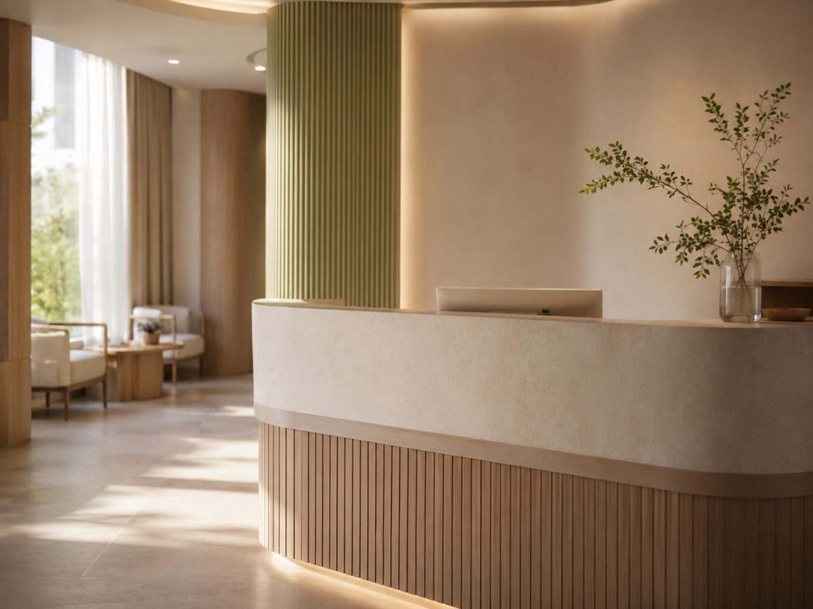
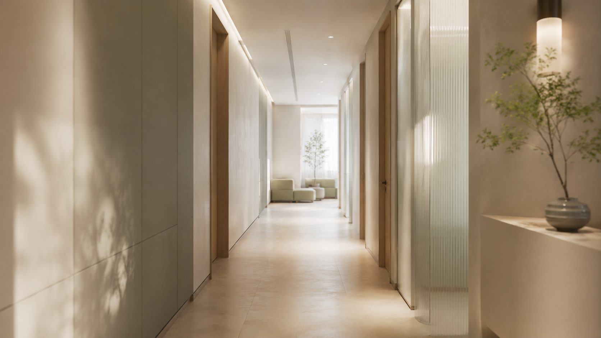
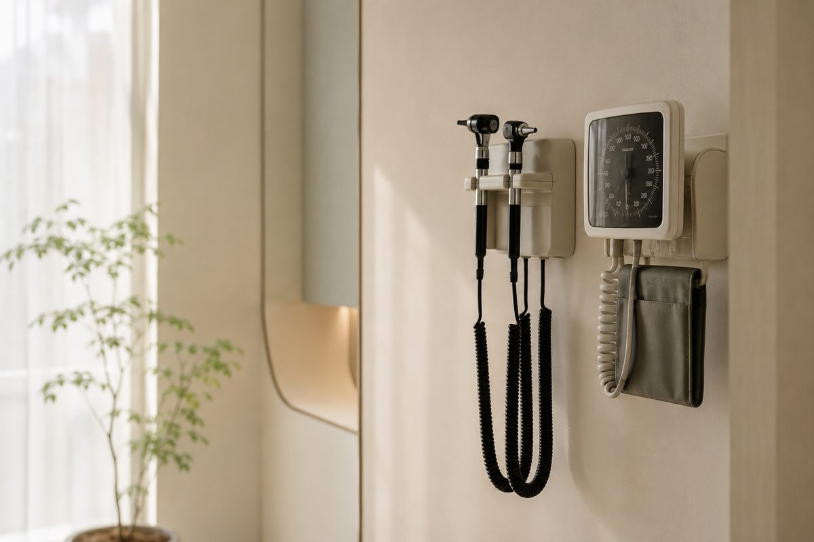
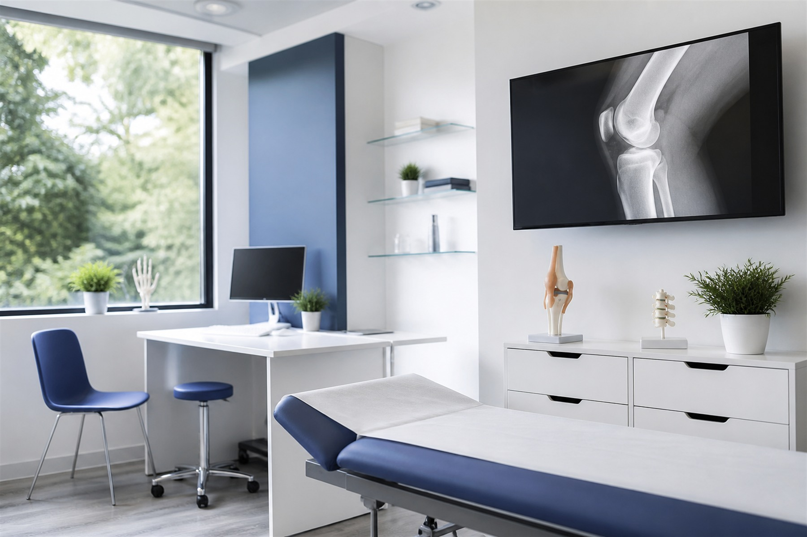
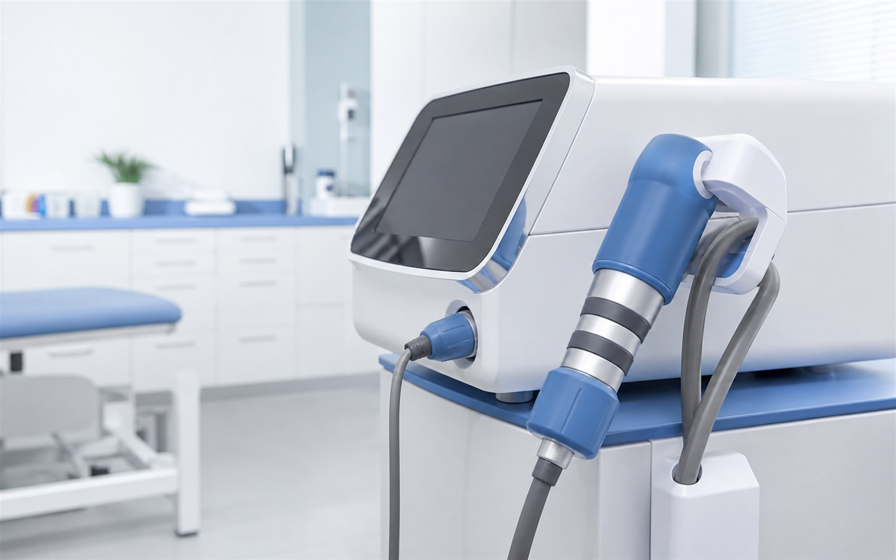
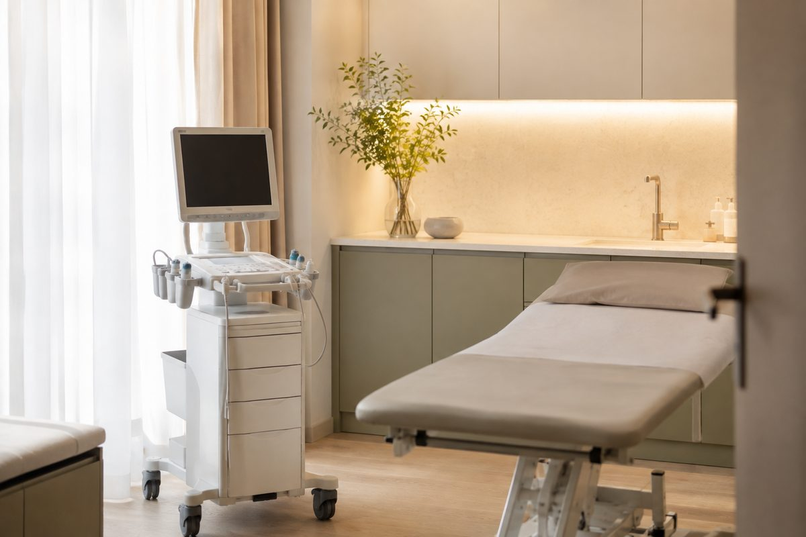
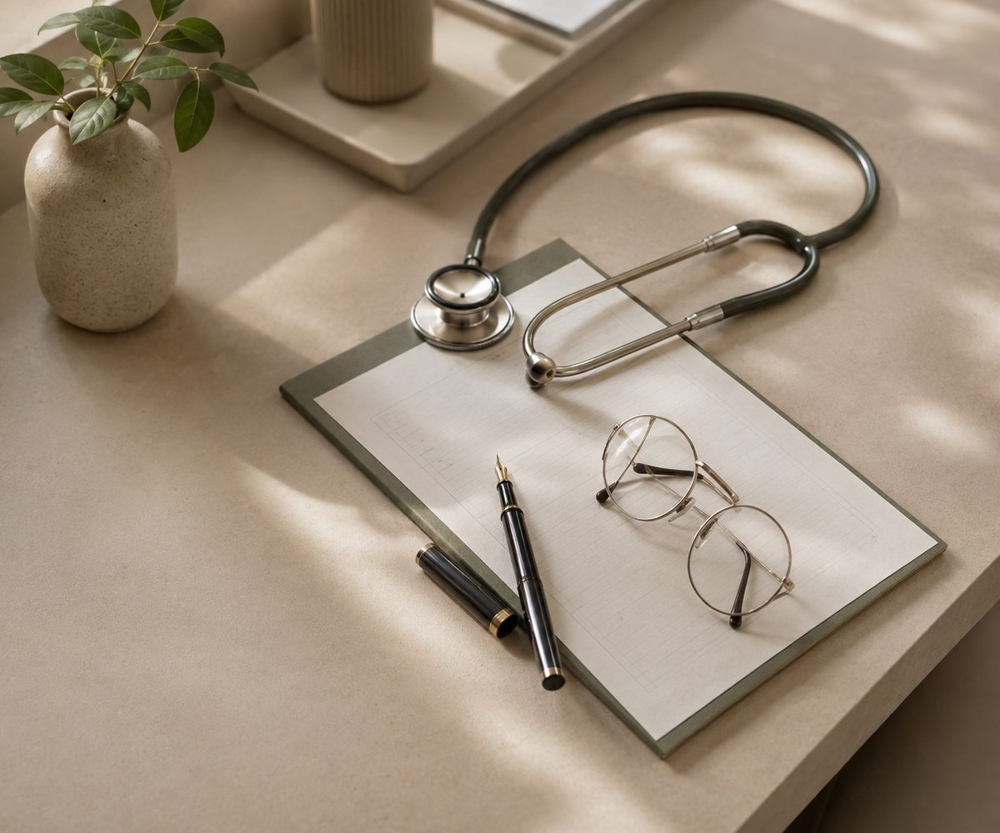
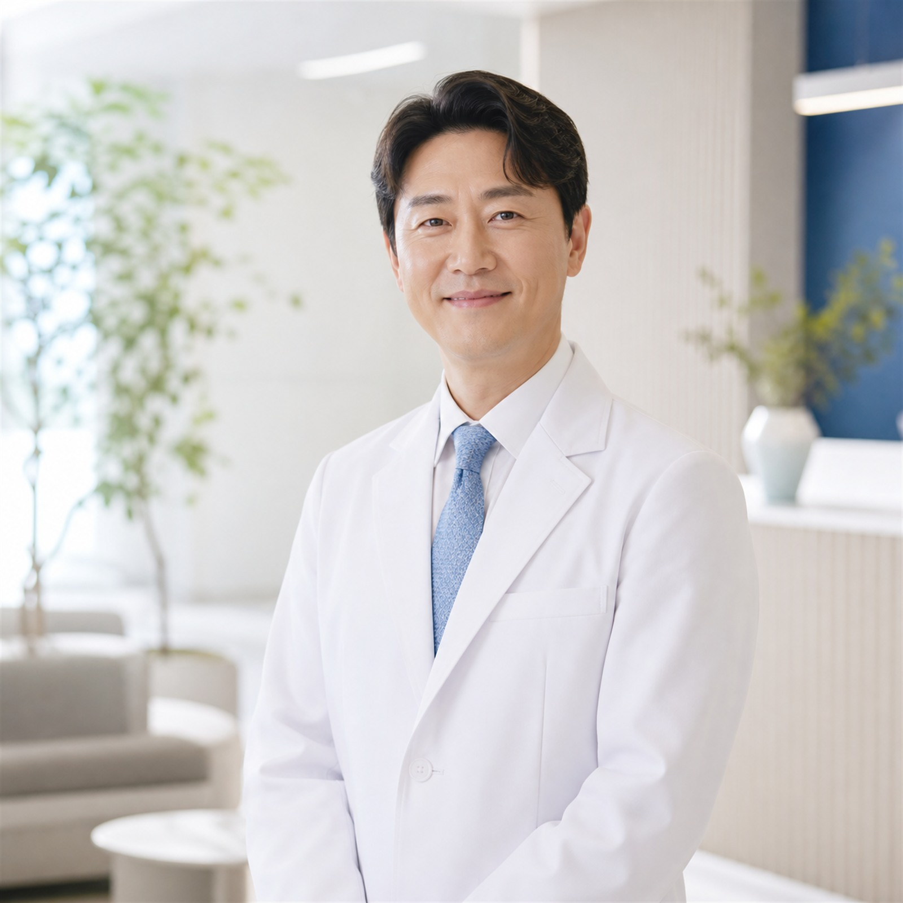
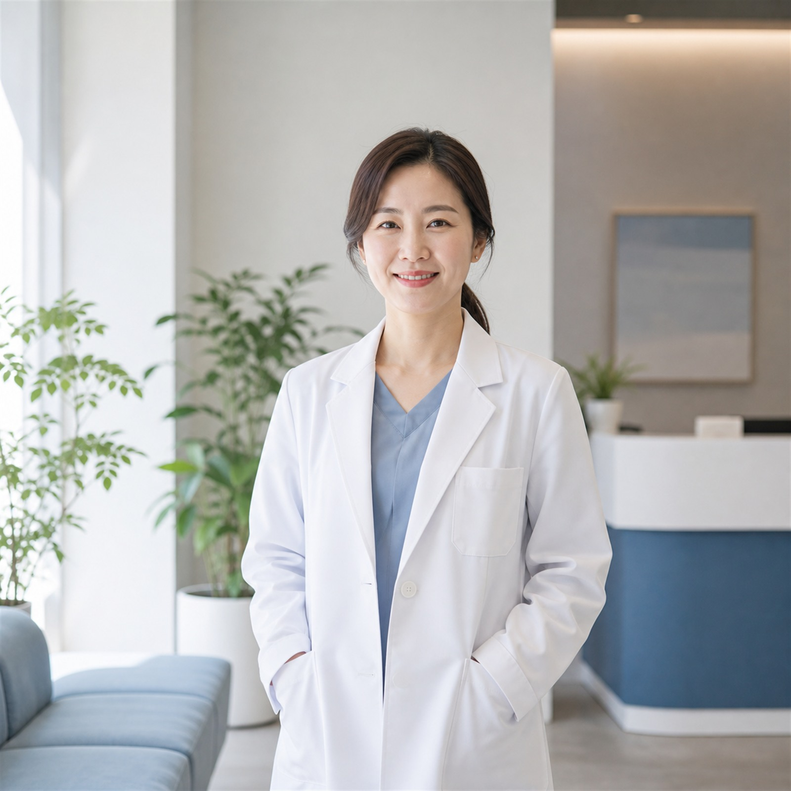
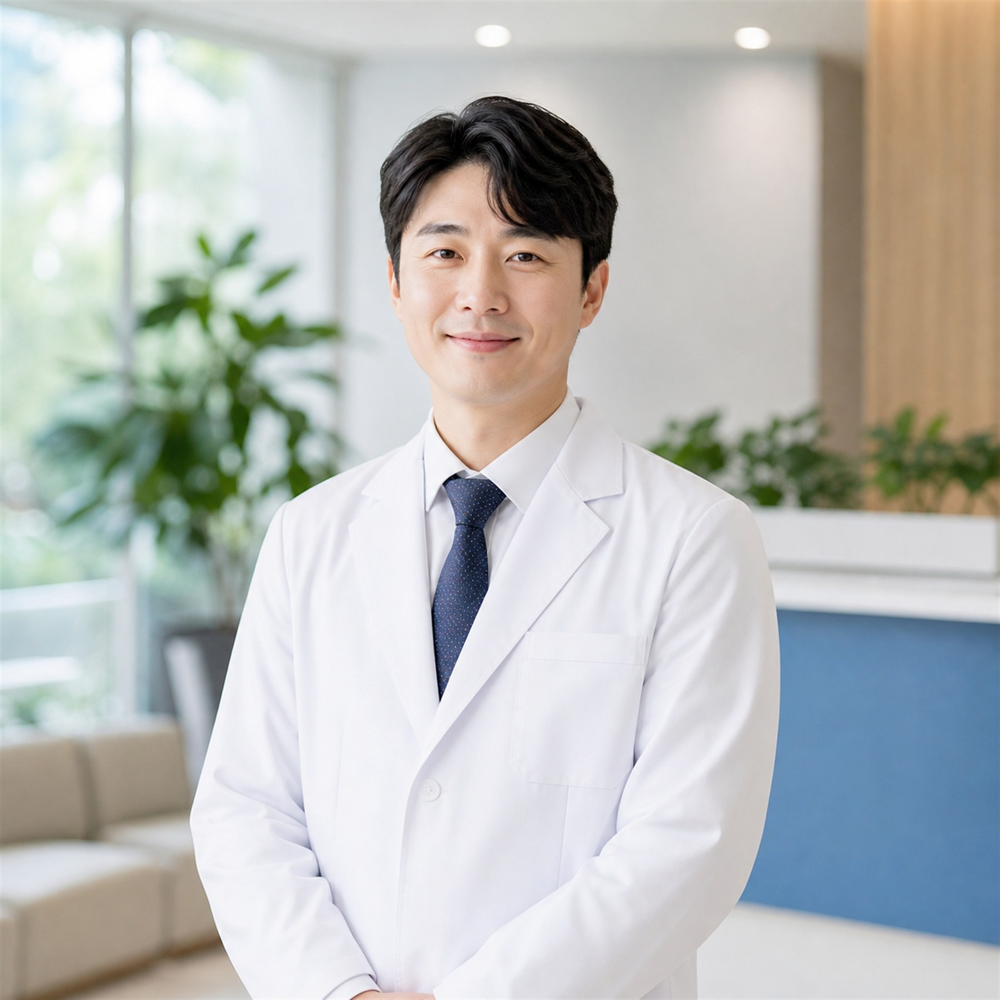

PACKAGE
모든 패키지에 전문의 결과 상담이 포함됩니다.
280,000원
소요 약 2시간
590,000원
소요 약 4시간
1,280,000원
소요 약 6시간
ON THE DAY
REPORT
검진 결과지는 대부분 읽히지 않습니다. 메디안은 수치 옆에 '그래서 무엇을 하면 되는지'를 적어 드리고, 전문의가 직접 통화로 설명합니다.
임직원 정기 검진을 단체로 진행합니다. 인원과 희망 일정만 주시면 맞춤 패키지와 단가를 제안해 드리고, 결과는 개인정보 보호 원칙에 따라 본인에게만 전달됩니다.
FACILITY
검진 당일 이 순서로 지나가시게 됩니다. 대기 동선과 검사실이 분리돼 있습니다.






DOCTORS
검진 결과지를 우편으로만 보내지 않습니다. 판독한 전문의가 직접 설명 상담을 합니다.

이정한 원장내과 전문의 · 소화기내시경 세부전문의위 · 대장내시경과 종합검진 판독을 맡습니다. 진정내시경 누적 2만 건.

한서윤 과장영상의학과 전문의초음파 · CT · 유방촬영 판독을 담당합니다. 여성 검진은 여의사 진료로 배정 가능합니다.

최도현 과장가정의학과 전문의결과 설명 상담과 생활습관 관리 계획을 함께 정리해 드립니다.
RESERVATION
평일 08:00 – 17:00 · 토요일 08:00 – 13:00 · 검진 전날 안내 문자 발송
0507 · 000 · 0000